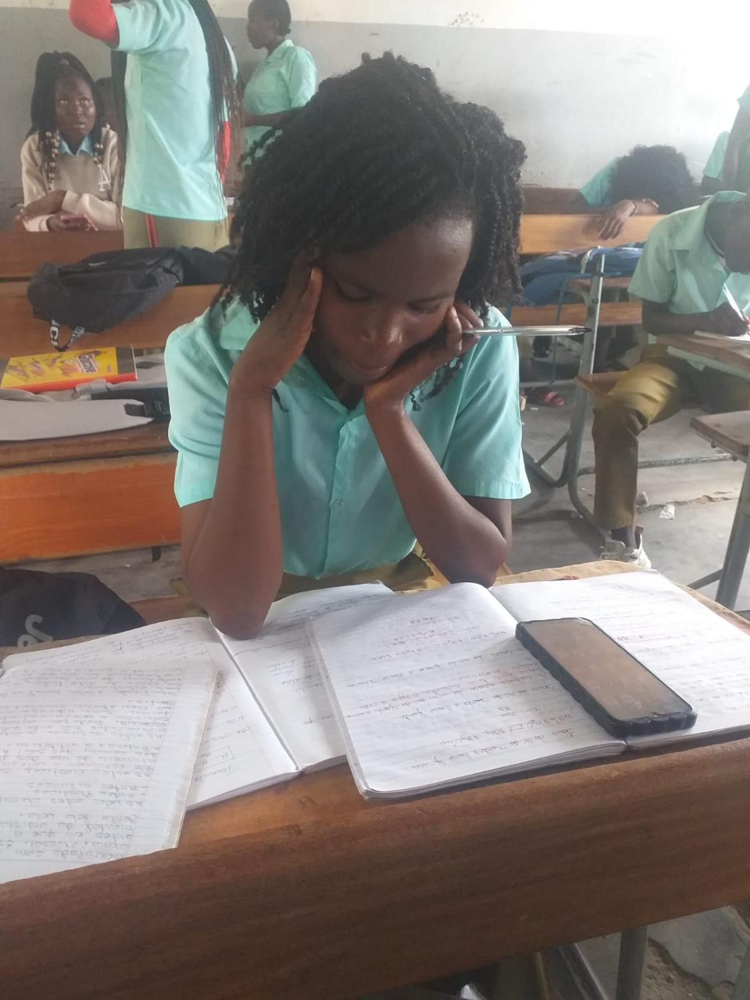
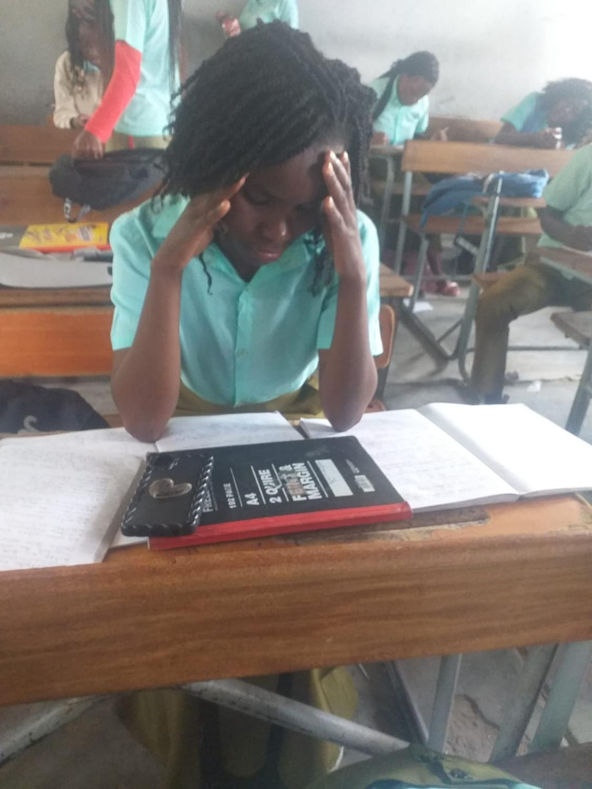

As fotografias abaixo mostram situações reais de estudo sob pressão. Servem para sensibilizar sobre a importância de cuidar da saúde mental.

Cansaço e sobrecarga
Aluna a estudar com o telemóvel ao lado, demonstrando fadiga.

Pressão e concentração forçada
Momento de esforço intenso durante o estudo.

Stress e tensão
Aluna a sentir a pressão dos estudos, com o telemóvel e cadernos à frente.